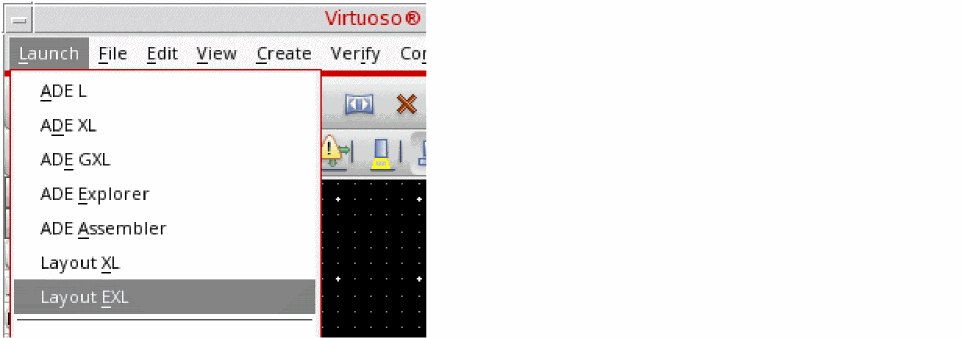
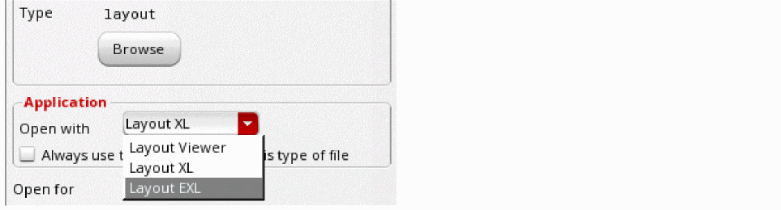

Virtuoso Layout Suite EXL
Virtuoso® Layout Suite EXL (Layout EXL) is the most advanced editing environment in the Virtuoso Layout Suite, providing access to the industry’s first electrically and simulation-driven layout design environment.
The Layout EXL cockpit offers full access to all the functionality provided under Layout EAD in previous releases; to all Layout XL functionality; and to the newly introduced concurrent layout team design and interactive simulation driven routing features.
Layout EXL is also the required base platform for all 5nm design; for the Virtuoso RF solution; and for a new set of in-design technologies to facilitate advanced design planning and congestion analysis. These capabilities all have additional feature-specific license requirements on top of the base Layout EXL license.
See Layout EXL Features and Flows for more information on all of these features.
Launching Layout EXL
Layout EXL is required to edit any design that uses 5nm process technology or which includes specific design data generated by any of the technologies mentioned above. Designs containing such data must be edited only in Layout EXL in order to maintain compliance and to ensure that the design remains correct by construction at all times.
Consequently, when you open such designs from the Library Manager, CIW, or schematic or layout window menus, the design opens in Layout EXL automatically. The same applies to any design that was previously saved using Layout EXL.
To manually launch Layout EXL, do one of the following:
-
From a Schematics XL or Layout XL window, choose Launch – Layout EXL.
 -
Use the Open File form from a Schematics XL or Layout XL window and choose Layout EXL from the Open with drop-down list.

Opening a design in Layout EXL automatically checks out a Virtuoso_Layout_Suite_EXL license, which remains checked out until either
- All the layout windows in the Virtuoso session are closed. (The license remains checked out regardless of whether any of the layout windows are using EXL features or not.)
- The Virtuoso session itself is ended.
You cannot open a design containing Layout EXL data in Layout XL. You can, however, view a Layout EXL design using the Layout Viewer application. See Virtuoso Layout Viewer User Guide for more information.
Layout EXL Features and Flows
The features and flows available in Layout EXL are summarized below, along with instructions on how to enable each feature in the Layout EXL window and a link to more detailed information.
The Virtuoso_Layout_Suite_EXL license allows access to all Layout XL functionality, and to the specific features listed below:
-
Electrically Aware Design
The electrically aware design (EAD) flow lets you capture the current data from design simulations, extract and visualize RC parasitics as you edit the layout, perform EM checks, and fix violations. You can further extract parasitics from a partial or complete layout and rerun simulations to check if the output specifications are met.
You access the electrically aware design functionality both from the EAD menu (which is automatically installed when you launch Layout EXL) and in the EAD workspace, available from the drop-down list in the toolbar.
See Virtuoso Electrically Aware Design Flow Guide to find out more. -
Simulation Driven Routing
The simulation driven routing (SDR) capability elevates Virtuoso from an electrically aware design environment to a simulation driven design environment. It addresses many of the electromigration and parasitic challenges of critical circuits and advanced-node designs, offering the layout designer an innovative and predictable flow to help meet current density constraints, significantly reduce sign-off times, and improve productivity and design reliability.
You access the simulation driven routing functionality from the SDR Toolbar, which is installed automatically when you launch Layout EXL.
See the Virtuoso Simulation Driven Interactive Routing User Guide to find out more. -
Concurrent Layout Team Design
Concurrent layout team design is a layout editing environment that lets multiple designers work concurrently on different parts of the same top cellview within Virtuoso. This increases the overall productivity of the layout design team by allowing them to work on different aspects of a single design in parallel.
To access the feature, choose the Concurrent_Layout workspace from the drop-down list in the toolbar.
See Getting Started with Virtuoso Concurrent Layout to find out more.
The following features require the Layout EXL platform and the Virtuoso_Layout_Suite_EXL license as a base, along with additional licensing (check the feature documentation for details):
-
Design Planning
The advanced design planning feature provides an innovative layout-place-route solution for both advanced and mature node designs. It offers the capabilities to make more informed planning decisions earlier in the design cycle based on real-time congestion analysis data provided by the fully integrated Congestion Analysis assistant.
To access the feature, choose the Design_Planning workspace from the drop down list in the toolbar.
See Virtuoso Design Planner User Guide to find out more. -
Congestion Analysis
The Congestion Analysis assistant facilitates the quick and accurate modeling of routing congestion to help improve floorplanning, optimize pin generation and placement, and reduce overall die size. The feature lets you extract, display, and analyze routing congestion both visually and statistically, and offers sophisticated tools facilitating the targeted optimization of routing paths for critical nets and net groups.
To open the assistant, choose the Congestion_Analysis workspace from the drop down list in the toolbar.
See Running Congestion Analysis to find out more. -
Virtuoso RF Solution
The Virtuoso RF solution allows ICs to be imported from different technologies and into a single package design, enabling package designers to assemble and simulate the package on a single platform.
You access the RF solution by setting theVirtuoso_RF_Optionshell environment variable before you launch Virtuoso. You cannot open a package layout in Layout EXL unless this environment variable is set.
See Virtuoso RF Solution Guide to find out more.
Return to top